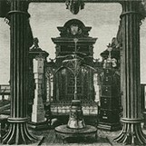
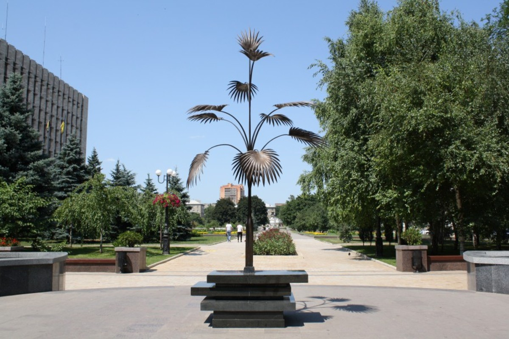

Пальма Мерцалова
Пальма Мерцалова - уникальное произведение кузнечного искусства, ставшее одним из самых узнаваемые символов Донбасса. Созданная в 1896 году талантливым кузнецом Алексеем Ивановичем Мерцаловым, эта скульптура воплотила в себе дух промышленного подъема Российской империи конца XIX века. Выкована скульптура из цельного стального рельса в конце XIX в., была награждена премией Гран-при Парижской Международной промышленной выставки 1900 г. Оригинал хранится в музее Горного института в Санкт - Петербурге. Многочисленные современные копии работы донецкого кузнеца С. Каспрука установлены в Киеве, Львове, Крыму, Москве, Ганновере, Оттаве. В Донецке первую копию установили в 1999 г. возле выставочного центра "Экспо-Донбасс", другая находится в самом центре города - на бул. Пушкина, у здания Донецкой областной государственной администрации.
Пальма Мерцалова - символ возрождения Донбасса, как независимого и мощного промышленного региона. Изображение пальмы находиться на гербе Донецкой области и яляется прямым подтверждением искусного мастерства и трудолюбия дончан. Создание пальмы было приурочено к шестнадцатой Всероссийской промышленной и художественной выставке промышленных и кустарных промыслов, которая проходила в 1896 году в Нижнем Новгороде. На этой выставке пальма была выставлена как один из экспонатов павильона «Новороссийского общества каменноугольного, железного и рельсового производств». Выковал её в конце 1895 года кузнец металлургического завода - Алексей Иванович Мерцалов. Помогали ему рабочие того-же завода, особенно молотобоец Филипп Федотович Шкарин.
Трудно поверить, но пальма была изготовлена без сварки и соединений из целого куска рельса. Рельс был выбран в качестве исходного материала в рекламных целях, как основной продукт «Новороссийского общества каменноугольного, железного и рельсового производств». Высота пальмы составила 3 метра 53 сантиметра. На её создание у Мерцалова ушло три недели. Молот и зубило — вот единственные инструменты, которыми пользовались кузнецы. На верхушке пальмы расположен венчик, а вокруг ствола десять листьев. Листья пружинят, хотя они выкованы из стали и составляют единое целое со стволом. Для пальмы также была выкована кадка из четырёх укреплённых рельсовых стоек, вокруг которых уложены двадцать три металлических кольца разного сечения. Количество колец соответствовало возрасту завода — 23 года. Сама пальма весит 325 килограмм, а кадка в которой она стоит - 200 килограмм. Алексей Мерцалов лично присутствовал на Нижегородской выставке вместе с группой других рабочих завода. Филигранная пальма была высоко оценена специалистами, людьми искусства и простыми посетителями выставки. Газеты того времени писали: "Пальма поражает зрителей высотой, стройностью, удивительным изяществом. Ее темные, рассечённые листья, веером расходящиеся от ствола, были так легки, а тонкий шершавый ствол так гибок, что вначале было трудно поверить, что это не живое растение, вывезенное с кавказского побережья, а тончайшее произведение искусства. Всем хотелось потрогать её руками."
